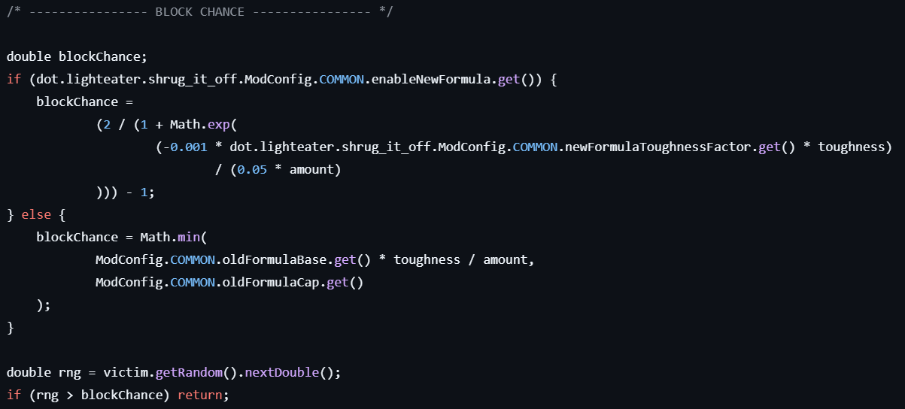

Adds a chance for Armor Toughness, an often overlooked value, to block weak attacks.
The numerical system took careful implementation to follow and watch. Version mismatches of Minecraft led to a different implementation.
